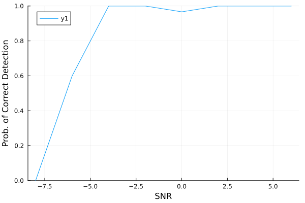

Validation of Baseline
To validate the implementation of our key baseline, generalized likelihood ratio testing (GLRT) as proposed by Chung et al. [CBMH2007]. In particular, we reproduce Fig. 4 of the paper, which are the results for $k=3$ wideband sources. We will try to follow the experimental setup in the paper as closely as possible.
System Setup
Here is the system setup.
n_fft = 64 # Number of requency bins (J in the original paper)
n_snap = 10 # Number of snapshots (K in the original paper)
fs = 2000 # Sampling frequency [Hz]
N = n_fft*n_snap # Number of samples
M = 15 # Number of sensors
f0 = fs/3 # Maximum frequency [Hz]
c = 1500 # Propagation speed of the medium [m/s]
λ = c/f0 # Minimum wavelength
spacing = λ/2 # Inter-sensor spacing [m]
Δx = range(0, M*spacing; length=M) # Relative sensor position
nothingUnfortunately, the original paper does not specify the sampling frequency and target frequency they used. Therefore, we had to pick some arbitrary number for fs and f0.
The $k = 3$ targets and their bandwidths are set as followS:
ϕ = [-30, 20, 24] / 180*π # Direction-of-Arrivals
Δf = f0 - (17/32*f0) # Signal bandwidth
nothingWe now generate the source signals by band-limiting white Gaussian noise.
using DSP
using Random123
seed = (0x97dcb950eaebcfba, 0x741d36b68bef6415)
rng = Random123.Philox4x(UInt64, seed, 8)
Random123.set_counter!(rng, 1)
ϵ = randn(rng, N, length(ϕ))
bpf = DSP.Filters.digitalfilter(
DSP.Filters.Bandpass(17/32*f0, f0, fs=fs),
DSP.Filters.Butterworth(8)
)
x = mapslices(xi -> DSP.Filters.filt(bpf, xi), ϵ; dims=1)
nothingGLRT uses the following key parameters:
k_max = 4 # Maximum number of targets
q = 0.1 # False discovery rate
nothingThe simulation range is set as follows:
snrs = -8:2:6
n_trials = 30
nothingLet's run the simulation.
filter = WidebandDoA.WindowedSinc(N)
pcorrect = map(snrs) do snr
mean(1:n_trials) do _
σ2 = 10^(-snr/10)
like = WidebandIsoIsoLikelihood(N, 4*N, filter, Δx, c, fs)
y = rand(rng, like, x, ϕ; sigma=sqrt(σ2*Δf/fs))
config = ArrayConfig(c, Δx)
R, Y, f_range = snapshot_covariance(y, n_fft, fs, n_snap)
# The original paper only states that they use J = 10 frequency bins.
# We pick 10 bins that sufficiently cover the target frequency f0.
idx_sel = 13:22
R_sel = R[:,:,idx_sel]
f_sel = f_range[idx_sel]
Y_sel = Y[:,:,idx_sel]
k, _ = likeratiotest(
rng, Y_sel, R_sel, q, k_max, n_snap, f_sel, config; visualize=false
)
k == length(ϕ)
end
end
nothingResult
using Plots
Plots.plot(snrs, pcorrect, xlabel="SNR", ylabel="Prob. of Detection", ylims=[0, 1])
savefig("baseline.svg")
nothingGKS: cannot open display - headless operation mode active
- CBMH2007Chung, P. J., Bohme, J. F., Mecklenbrauker, C. F., & Hero, A. O. (2007). Detection of the number of signals using the Benjamini-Hochberg procedure. IEEE Transactions on Signal Processing, 55(6), 2497-2508.